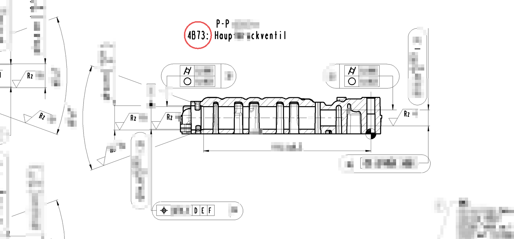

1. 성적서 자동 수집 · DB화
- 측정 PC 공유 폴더를 1분마다 읽어 측정값을 Parquet DB에 쌓음
- 원본은 읽기만, 임시 사본은 무결성 확인 뒤 바로 삭제
- PC-DMIS 엑셀 · 뉴로메저 성적서 형식 해석, 260자 넘는 긴 경로 처리
- 측정 데이터 대시보드: 측정기별 성적서 수, 기간별 NG율, 아이템별 성적서와 도면·3D 연결

CMM 성적서 수집, 측정 실수 검사, 측정 PC 저장 자동화 · 2026-10-17 ~ 2026-11-03



PC-DMIS 원본 프로그램 읽기 전용 유지, 뉴로메저 자동 저장은 측정 뒤 원본으로 되돌림, 규칙 밖 손 저장 성적서 격리.
형상·조도 측정기 파일을 모아 CMM 데이터와 연결, 원시 곡선에서 Rz 직접 계산.
성적서 양식 화면, 치수별 경향·분포·Cpk, 측정 프로그램을 해석해 3D 모델 위에 측정 위치와 편차 방향 표시.
제목의 판정과 측정값의 공차 초과를 대조.
측정 시작·끝을 실시간으로 받아 가동률 계산, 근무별 업무일지 자동 작성, 변경점 진행 묶어 보기.
변경점 성적서·형상·조도 자료를 자동으로 모아 건별 폴더로 정리.